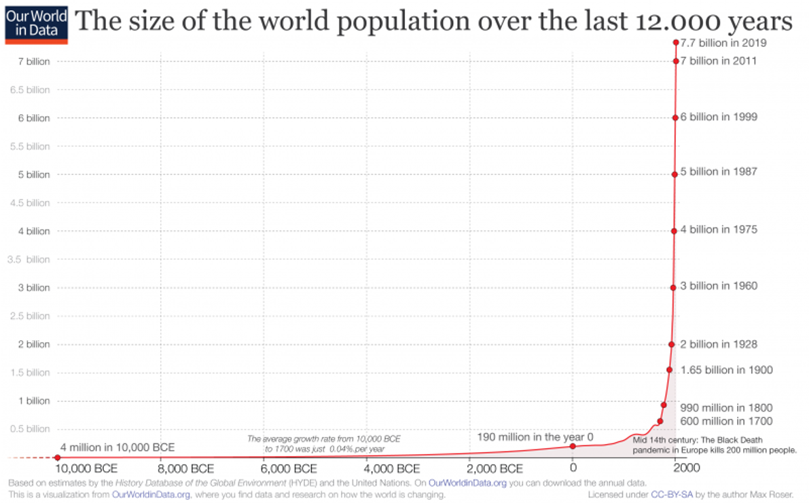
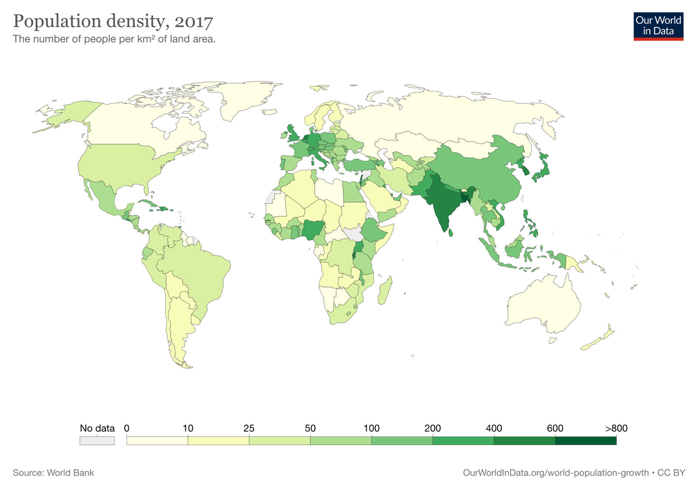
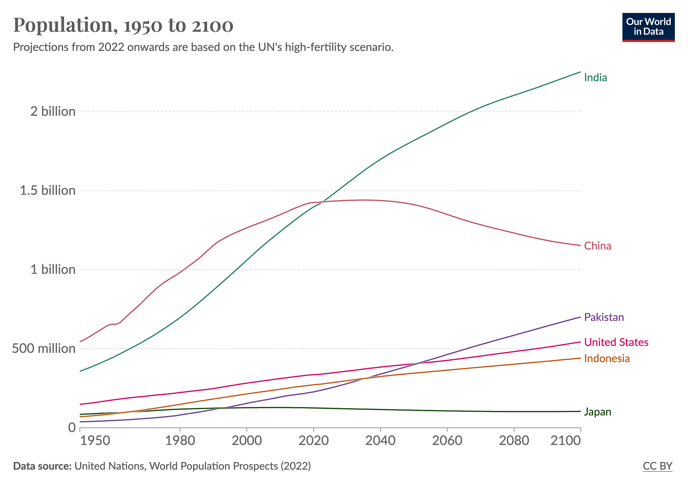
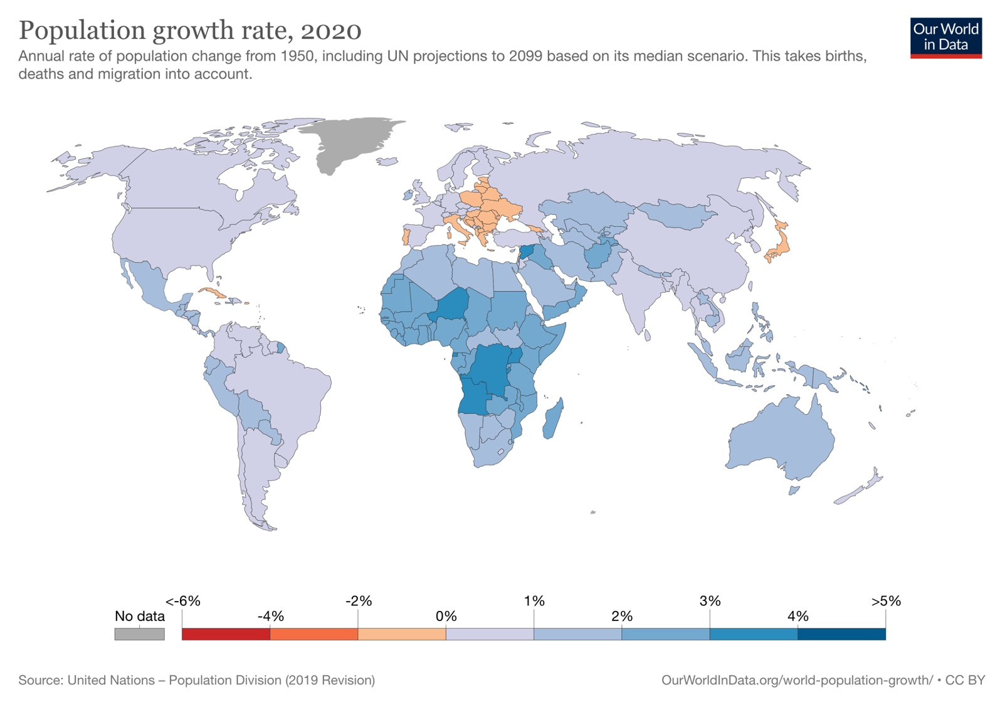
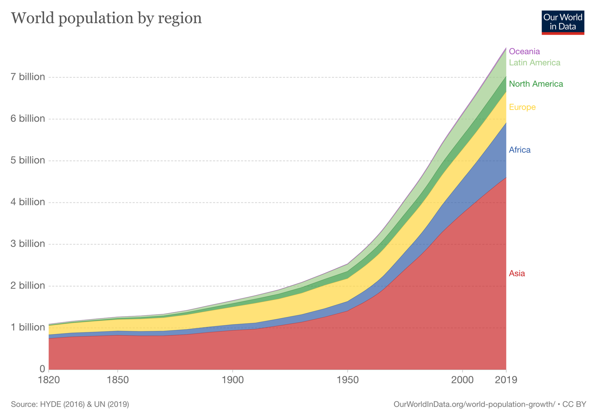
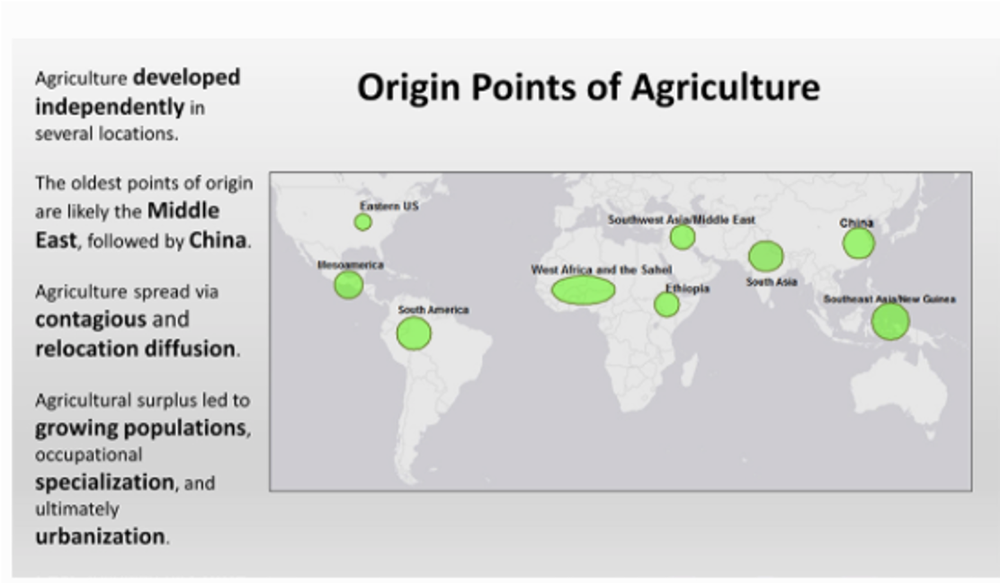
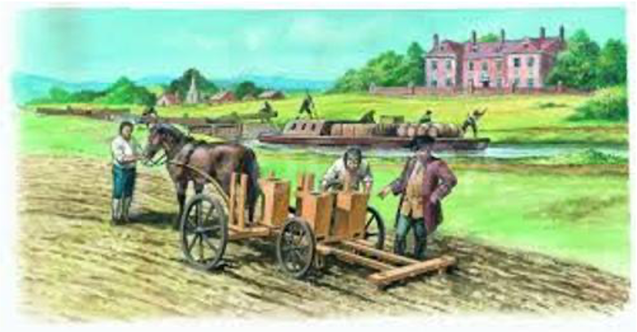
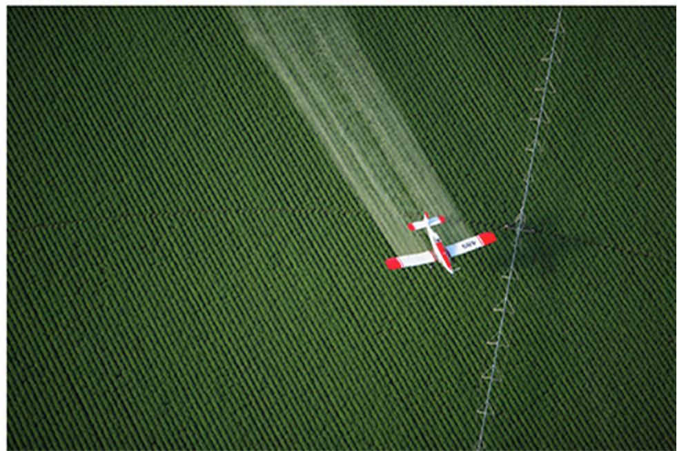

4 Population Growth and Well-Being
4.1 World population is increasing steadily
[世界人口は着実に増加している]
The world population has been steadily growing over the past few decades. According to the United Nations, the world population reached 7.9 billion in 2021 and is expected to reach 9.7 billion by 2050.
The rate of population growth has been declining since the 1960s, thanks to improvements in healthcare and access to education, as well as the availability of birth control. However, population growth remains a concern in many parts of the world, particularly in developing countries where access to family planning services is limited.
Population growth has a significant impact on a wide range of issues, including food security, access to healthcare, and environmental sustainability. Managing population growth and ensuring sustainable development is a key challenge for policymakers around the world.

4.2 World population density
[世界の人口密度]
The population density of the world varies greatly from region to region, with some areas being densely populated and others being sparsely populated.
The average population density of the world is approximately 58 people per square kilometer. However, this number is heavily influenced by large, sparsely populated areas such as Siberia, the Sahara Desert, and the Amazon rain forest.
Some of the most densely populated countries in the world include Bangladesh, Singapore, and Monaco, with population densities of 1,110, 8,188, and 26,337 people per square kilometer, respectively.
Overall, population density is an important factor in a range of issues, from urban planning and transportation to resource allocation and environmental sustainability.

Reference: https://worldpopulationreview.com/country-rankings/countries-by-density

Data source: United Nations, World Population Prospects (2022)
4.3 World population growth rate
As of my knowledge cutoff in September 2021, the world population growth rate was estimated to be around 1.05% per year. However, this growth rate is not evenly distributed across different regions of the world, and some countries and regions are experiencing higher population growth rates than others.
It’s worth noting that population growth rates can change over time due to various factors, such as changes in birth rates, mortality rates, and migration patterns. Additionally, population growth rates can have significant impacts on issues such as resource consumption, environmental sustainability, and social and economic development.

4.4 Food shortage and green revolution
In the developing countries of Africa, the Middle East, and parts of Asia, where many poor people struggle to obtain adequate food and nutrition. To improve this situation, the green revolution took place.

The Green Revolution was a period of significant agricultural innovation that took place from the 1940s to the 1960s. The revolution involved the development of high-yielding crop varieties, modern farming techniques, and improved infrastructure to support the growth and distribution of crops. The goal of the Green Revolution was to increase agricultural productivity and reduce poverty and hunger.
One of the primary reasons for the Green Revolution was the need to address food shortages around the world. As the global population grew, it became increasingly clear that traditional farming methods were not sufficient to meet the growing demand for food. The Green Revolution was seen as a way to increase the amount of food produced without increasing the amount of land used for agriculture.
The Green Revolution had a significant impact on food production, particularly in developing countries. Countries such as India, Mexico, and the Philippines were able to significantly increase their food production, which helped to reduce hunger and poverty in those areas.

However, the Green Revolution also had some negative impacts. The increased use of pesticides and fertilizers led to environmental degradation and health problems for farmers and consumers. Additionally, the focus on high-yielding varieties of crops led to a reduction in biodiversity, which could have long-term implications for food security.
Overall, the Green Revolution was a significant step forward in addressing food shortages and reducing poverty and hunger around the world. However, it also highlights the need for sustainable agriculture practices that balance the need for increased food production with environmental and health concerns.
4.4.1 The first agricultural revolution
The first agricultural revolution, also known as the Neolithic revolution, was a significant turning point in human history that occurred approximately 10,000 years ago. This revolution was characterized by the transition from hunting and gathering to agriculture and the domestication of plants and animals.

During the first agricultural revolution, humans learned to cultivate crops such as wheat, barley, and rice, and to domesticate animals such as cows, pigs, and sheep. This allowed them to settle in one place and develop permanent settlements, which eventually led to the development of cities and civilizations.
The first agricultural revolution also brought about other important changes, such as the development of tools for farming and the creation of new social structures based on the ownership of land and the division of labor.
Overall, the first agricultural revolution was a transformation period in human history that laid the foundation for many of the social, economic, and cultural developments that have occurred since then.
4.4.2 The second agricultural revolution
The second agricultural revolution is a term used to describe a period of agricultural development that occurred between the late 19th century and the beginning of the 20th century. It was a time of significant advancements in agricultural techniques and technology, which led to increased productivity and efficiency in farming.

Some of the key innovations of the second agricultural revolution include:
Mechanization: The use of machines like tractors and plows made farming faster and more efficient.
Chemical fertilizers: Farmers began using synthetic fertilizers to improve soil fertility and crop yields.
Irrigation: The development of more efficient irrigation systems allowed farmers to grow crops in areas that were previously too dry or arid.
Selective breeding: Farmers began selectively breeding crops and livestock to create stronger and more productive strains.
Crop rotation: The practice of rotating crops between different fields to prevent soil depletion and pest infestations.
These innovations helped to increase food production, which in turn led to population growth and urbanization. The second agricultural revolution also paved the way for the development of modern agribusiness and the use of genetically modified crops.
Overall, the second agricultural revolution was a significant milestone in the history of agriculture and had a profound impact on the way we grow food today.
4.4.3 The third agricultural revolution/ The green revolution
The third agricultural revolution, also known as the Green Revolution, refers to a period of significant agricultural advancement that began in the mid-20th century, particularly in the 1960s and 1970s. This period saw a rapid adoption of new technologies and practices in agriculture that aimed to increase productivity and efficiency in farming.

The Green Revolution was primarily focused on developing countries in Asia, Latin America, and Africa, where hunger and malnutrition were widespread due to low agricultural productivity. The main goal of the Green Revolution was to increase food production to feed the growing population and to reduce poverty and hunger.
Some of the key innovations of the Green Revolution include:
High-yielding crop varieties: Scientists developed new strains of crops such as wheat, rice, and maize that were more resistant to pests and diseases, had higher yields, and were more responsive to fertilizers.
Irrigation systems: The development of efficient irrigation systems allowed farmers to grow crops in previously unsuitable areas.
Chemical fertilizers and pesticides: The use of chemical fertilizers and pesticides increased crop yields and protected crops from pests and diseases.
Mechanization: The use of tractors, combines, and other machinery made farming faster and more efficient.
The Green Revolution helped to increase food production in developing countries, and as a result, reduced hunger and malnutrition. However, there were also some negative consequences, including increased reliance on chemical fertilizers and pesticides, soil degradation, and the displacement of traditional farming practices.
Overall, the Green Revolution was a significant step forward in the history of agriculture, and its legacy can still be seen in the way we grow food today.